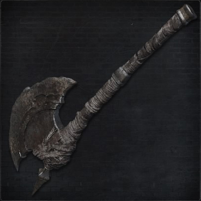
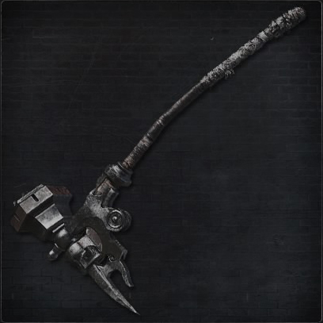
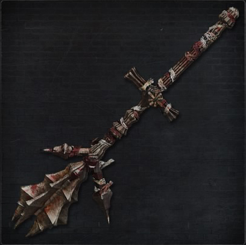

Saw Cleaver
The Saw Cleaver is one of the starting weapons presented to the player upon arrival to the Hunter's Dream, though it may be purchased from the Messengers should the player acquire the Saw Hunter Badge. As one of the starting weapons; it, like the Hunter Axe, is a Strength-based weapon, though it has almost equal scaling of both Skill and Strength like its counterpart, the Saw Spear. However, the Saw Cleaver scales more with Strength. Additionally, while in its untransformed state the Saw Cleaver deals Serration damage, which deals an additional 20% damage against beast enemies. Similar to the Threaded Cane, the Saw Cleaver allows the wielder to utilize a sidearm in both untransformed and transformed states. While in its untransformed mode, the Saw Cleaver's moveset focuses primarily on rapid attacks that consume very little stamina per attack. However, it also has a short range. Alternatively, while in its transformed mode, the moveset begins to focus on slower, more powerful attacks, and the Saw Cleaver's range increases; however, in its transformed mode, the Saw Cleaver loses its Serration damage bonus. The transformation attacks of the Saw Cleaver are incredibly effective, and one can maintain a high damage-per-second rate by creating a combination of transformation moves.
Saw Spear

The Saw Spear is considered by most players to be the superior version of the Saw Cleaver. It is made an even more tempting weapon since it can be acquired within the first half-hour of the game. The major differences between these two very similar weapons are: The Cleaver has slightly higher base damage. The Cleaver is mostly Strength based, while the Spear is mostly Skill based. The Cleaver has one mode that deals serrated damage, whereas the Saw Spear has both dealing serrated damage. The Cleaver deals only physical damage, while the Spear also has thrust and blunt attacks, making its moveset more varied. In the end the evidence is clear, the Saw Spear is mostly a more versatile option. Especially because in "Quality" builds (builds with the same amount of level investment in both Strength and Skill), both weapons deal essentially the same damage.
Hunter Axe
The Hunter Axe is a starting weapon. It is a hand axe in its normal state and a halberd (polearm) in its transformed state. It is often considered one of the best weapons in the game for Strength/"Quality" builds. But even at the beginning of the game, with low stat investment, it is a good weapon even if players are going for a Skill build. The reason for its popularity is how it has a varied and useful moveset, its great damage at the start of the game, the fact some attacks can stagger larger opponents, it's transformed state has decent range and it is also the weapon with the second highest Rally potential in the game, thus allowing players to be more aggressive and save on Blood Vials. While in its untransformed form, the Hunter Axe has three heavy swings followed by a powerful smash in its R1 combo, which allows players to attack isolated targets much more quickly, and the charged attack is a devastating downward strike that strikes foes into the floor.
Threaded Cane
The Threaded Cane is one of the starting weapons in the game. However, unlike its counterparts, the Saw Cleaver and the Hunter Axe, its scaling focuses primarily on Skill, with lesser scaling in Arcane and negligible scaling in Strength. Like the Saw Cleaver, the Threaded Cane permits the user to wield a sidearm, regardless of its state; that is to say, regardless of whether it is transformed or not. Additionally, while in its transformed state, the Threaded Cane gains an additional 20% damage against beast enemies due to the additional Serration damage. While untransformed, the Threaded Cane possesses a moveset somewhat similar to the Reiterpallasch, focusing on rapid attacks with lackluster physical damage and short range; alternatively, while transformed, the weapon's moveset becomes slower with more powerful attacks, contributed to by the additional Serration damage, alongside a large increase in the Threaded Cane's range. Finally, when untransformed, the Threaded Cane loses its Serration damage bonus but gains a Righteous damage bonus in its place.
Kirkhammer

The Kirkhammer is known for its extreme dual nature which comprises an easy-to-handle silver sword and a huge stone hammer. The sword form allows the hunter to perform quick combos that causes slash and thrust damage. While in the transformed form, it becomes a greathammer by attaching the sword into its sheath. Although the hammer is far more powerful than the sword in damage and stagger, its slow attack speed and wide radius can lead to the wielder being exposed to counter attacks from enemies. Care should be taken by the player to position themselves cautiously when in hammer mode. When used in hammer form this weapon can become cumbersome during normal attacks, but when locked on to an enemy its dashing attack is the quickest of any trick weapon in the game. This allows the wielder the ability to swoop in, deal massive damage, then retreat before the enemy has the opportunity to counter attack.
Ludwig's Holy Blade

It consists of a longsword that, when transformed, combines with its sheath to form what is by all rights a Greatsword. Its Longsword mode possesses the same moveset as the Kirkhammer's Longsword mode, with the exception of possessing a much larger blade. The similarities increase with the Kirkhammer as its greatsword mode deals great damage-albeit less than the Kirkhammer's Great Hammer mode-but in a much more fluid combo, and without wasting as much stamina. Additionally, Ludwig's Holy Blade is a Church weapon and is, therefore, a righteous weapon. It has a 50% damage boost against enemies vulnerable to righteous weapons which is active both in primary and secondary modes.
Rifle Spear
The Rifle Spear is a Trick Weapon that primarily utilizes thrust attacks. While not transformed, it is a nondescript spear that almost exclusively uses thrust attacks using only one hand, with the exception of a few moves. However, the Rifle Spear, while untransformed, possesses limited combos. While transformed, the rifle blade is cocked back and the barrel of a rifle is revealed, while the blade serves as a bayonet. Additionally, the weapon now becomes two-handed. The moveset of the transformed Rifle Spear possesses less melee range than the untransformed version and the moves are typically slower. However, the weapon becomes vastly more powerful, especially as the charged attack performs a charging thrust that deals more damage than its untransformed counterpart. Additionally, the Rifle Spear, while transformed, gains access to a plethora of moves outside of basic thrusts, unlike its untransformed counterpart.
Stake Driver
The Stake Driver, though it may be short, is definitely on the faster side of weapons. It is a good weapon for "quality" builds as it has good scaling on both Strength and Skill. It has two modes: unloaded and loaded. The "unloaded mode" is the most versatile as its stake is pulled out of the mechanism, thus allowing it reach and wide swing. It has many combinations of slashing attacks with a single thrust attack in its mix, and is overall a very fluid moveset. The charged attack, however, is a very brutish downward strike. The "loaded mode" is perhaps the most straightforward as the stake is now fully pulled back into the mechanism of the weapon, and players will punch with the weapon repeatedly (it is important to note that while in loaded mode all of its attacks deal Blunt damage), all attacks are essentially based on close-quarters combat. But then comes the strong attack, which is what gives this weapon its peculiar name. The strong attack fires the stake of the weapon forward, effectively being a transformation attack. However, fully charging it takes a long while, but creates an explosive, devastating blow that completely obliterates opponents, with an extremely high damage multiplier.
Tonitrus
Tonitrus is a mace and has a moveset that deals only blunt damage with a small innate amount of Bolt damage as well. However, the weapon lacks any sort of transformation or change in moveset. Instead, transforming the Tonitrus charges it with electricity for about 7 seconds, adding Bolt ATK. In other words, the transformation of this weapon is a temporary Bolt Paper. However, this buff is quite interesting as it is NOT a flat damage boost as other buffs. This buff, instead, adds a static 40 Bolt damage, then adds a 0.40 Arcane scaling, and finally multiplies all Bolt damage by a whopping 70%. The weapon, however, finds balance in its scaling. It has decent scaling in Strength and bad Arcane scaling, however, it is versatile in the sense that players with high Strength can still get decent damage out of it, especially if they find themselves not having time to buff the weapon, whereas having high Arcane turns it into an extremely high Bolt damage weapon.
Blade of Mercy
A special trick weapon passed down among hunters of hunters. One of the oldest weapons of the workshop. Splits into two when activated. The weapon's warped blades are forged with siderite, a rare mineral of the heavens. Most effective in swift attacks, such as after a quick-stepping.In secondary mode, consecutive weak attacks with this weapon continuously increase in speed. These rapid attacks deal a lot of damage quickly but will quickly drain stamina at the same time. In the transformed state, L2 slices while simultaneously jumping back.
Beast Claw
The Beast Claw has a primary focus on Strength, and is a weapon that caters to an extremely aggressive and unique playstyle. This is because the weapon will permanently activate the Beasthood meter. However, the rules of Beasthood still apply, weaker attacks build the meter slower, while strong attacks build it more quickly, and the player takes extra damage while the Beasthood meter is active (Beasthood only boosts physical damage, as such do not equip elemental Blood Gems on this weapon. One of the things that makes it unique is that its moveset can be completely changed by equipping the Oath Memory Rune Beast's Embrace.
Chikage
The Chikage is a katana that drains the player's health when transformed in exchange for pure Bloodtinge damage and to have a Rapid Poison effect on it. The health drain is rather slow and is based on percentages. Meaning health loss occurs at the same rate regardless of the level of the player’s Vitality. The Blood Mode deals pure Bloodtinge damage. Bloodtinge damage is extremely powerful because it is a damage type that is neither physical nor elemental. ost common enemies have high resistances against both physical and Arcane/elemental. Bloodtinge is something that most enemies only have a moderate resistance. Another thing that this weapon has when transformed is the ability to effect things with Rapid Poison, this makes it good against bosses or enemies who have very low rapid poison defense, such as Bloodlickers and Fluorescent Flowers.
Reiterpallasch
In its normal form this weapon is a rapier, dealing mostly thrust attacks, with the occasional slice. Its strong attack is a horizontal swipe that covers a lot of area in front of the wielder, but, if fully charged, it becomes a powerful thrust. When transformed, it becomes a Parthian (or "parting shot") Rapier, which is shorter, but attacks with quick consecutive sweeps and features an attached pistol that fires bullets, replacing the strong attack of the weapon. It is an effective weapon especially for Skill and Bloodtinge builds.
Whirligig Saw
The is a very curious weapon. Its one handed mode has almost exactly the same attack pattern as the Kirkhammer and Ludwig's Holy Blade, albeit that its speed is slower yet has more range. It lacks both these weapons ability of dealing "righteous damage" to the residents of Cainhurst or the Pthumerians. The transformed mode of this weapon turns it into an extended buzzsaw, complete with a lot of range, damage, and stagger potential. Additionally, it has very fluid and natural attacks, and a special attack that is triggered by holding the L2 button, this will leave players holding the saw as it cuts downs opponents with very fast and consecutive damage. It also has a terrific Arcane scaling, which is great for players focused on elemental builds. Giving it fire damage will turn this weapon into an invaluable boon against almost all beasts within the game, provided that players have the necessary stats to do so. Additionally, the weapon has an above average rallying potential.
Beast Cutter
The Beast Cutter can be described as a mix between the Saw Cleaver and the Threaded Cane. While in its regular form, the Beast Cutter will act as a large cudgel with a rather fluid moveset when compared with other mace type weapons. When transformed, it becomes a large, bulky whip with the greatest range in the game. Switching up its heavy attacks, it performs wide angled slashes to help deal with multiple threats at the same time. Additionally, when in whip mode, it can even stagger enemies with high poise such as the Winter Lanterns. Despite all these great advantages, players would do well in understanding that this weapon is intended mostly for builds with high levels of stamina as regular attacks will consume tremendous amounts of it with simple combos. The weapon has mediocre scaling even in strength, which it should specialize in, and has no hyper-armor unlike other strength based weapons.
Beasthunter Saif
This weapon is similar in design and appearance of the Saw Cleaver and Saw Spear. However, it vastly differs from these weapons both in strategy and practical use. While the other weapons are far better at dealing damage to beasts, the Beasthunter Saif's maneuverability and swiftness of attacks make it a highly versatile weapon. It is ideal for use against other hunters as its attacks feature a variety of dodge and dash attacks that quickly close distances as well as offer a swift escape. The primary form is that of a huge curved sword with very wide, slow swings. It is great for multiple weak opponents or one slower, harder enemy. It is extremely important to understand just how powerful the staggering capability of this weapon truly is. In the primary form, it can stagger the attacks of a Winter Lantern, making it as effective as Ludwig's Holy Blade and the Kirkhammer in their secondary forms.
Boom Hammer
The Boom Hammer is a weapon that is quite similar in function and strategy as the Tonitrus. As such, it is very straightforward. All of its attacks deal Blunt damage, with a small, yet noticeable amount of Fire damage. However, the weapon lacks a transformed state. Instead, the player cocks the firing hammer on the Boom Hammer, and it activates the miniature furnace within. This fire buff is permanent, not temporary. From this point, the following attack will deal massive fire damage, but only for one hit. This attack also deals a small swathe or blast of fire, that can hit enemies with its range, potentially hitting or killing multiple opponents. Its charge attack is extremely deadly when the buff is active. This makes the weapon extremely powerful with high chances of managing one-hit kills on even enemies with high health. And the fire damage is sure to obliterate any Beast-type enemy.
Burial Blade
he Burial Blade is a trick weapon that turns from a curved sword into a large scythe. The Burial Blade has very wide sweeping attacks, making it an optimal weapon for fighting groups of enemies. The small infusion of Arcane into the blade adds extra damage to Pthumerians, but is not effective against Kin. When transformed, the Burial Blade turns into a complete scythe, increasing the attack radius of the weapon, allowing the wielder to better deal with multiple opponents and attack them from a safer distance. This weapon is frequently compared to the Hunter Axe, and for good reason. It has a very deceptive reach when transformed and can quickly catch foes off guard. It has a very fluid moveset and it has the highest rally potential in the game which is further boosted when in scythe mode. Another interesting, similar aspect of the Burial Blade is its charge attack, as it can knock down heavy enemies like the Merciless Watcher. Another great thing about it is that the L2 when in scythe mode is a combination of multiple, powerful downward thrusts into enemies, making it very effective against Kin and Great Ones alike. In the end, this weapon truly excels at dealing with single or multiple enemies and its high rally potential furthers its use especially in Cursed Chalice Dungeons where health is extremely important to manage.
Rakuyo
The Rakuyo is a pure Skill weapon, with an eventual "A" scaling when fully upgraded, has a terrific moveset, and it can be given an element, or buffed. The untransformed mode is a twin-bladed weapon with an R1 combo comprised of slash and thrust attacks one after the other, and the charged strong attack is an extremely fast thrust that covers a lot of ground. The transformed mode separates the weapon as it becomes a dagger and katana that have no charged attacks, the R1s are purely combo slashes and R2s are purely combo thrusts. The L2 is what makes this weapon varied, the wielder will unleash of flurry of spinning slashes. It costs a lot of stamina, but can be helpful when surrounded, and deals good damage. However, the L2 attacks change depending on whether there was any previous attack, and which attack started the combo sequence. With R1, the player will deliver a slower, yet powerful slash with both hands into a single direction. With R2, the player will strike quickly with both blades in a single thrust. All of these characteristics make the Rakuyo a very deadly weapon, due to its variety of moveset and very fluid movement. Additionally, since the Rakuyo has a purely Thrust combo with the R2, it makes it a very good weapon for fighting Kin type enemies, especially as this weapon can be buffed.
Amygdalan Arm
The Amygdalan Arm is undoubtedly one of the best and most versatile dedicated Strength weapons in the game. While on its primary mode, it is merely a curled up limb of an Amygdala which can be used to smash opponents into the ground relentlessly. The weapon truly comes to life (figuratively and literally) when its secondary mode is activated, turning it into a deadly whip that can strike multiple times using its previously retracted talon. The Club form should be used primarily against single opponents, as it is faster and saves more stamina. However, attacks are without much variety. All weak attacks are overhead bashes that crash into the ground, with the last one having a delay from a spin the character does. The strong attack will do a wide horizontal swing, but when charged will crash into the ground with great strength, knocking opponents into the pavement. Continuing the strong attack afterwards will launch enemies flying into the air. This strong attack combo is so powerful that it can be used as a replacement for Visceral Attacks should the player hit them from the back. The running weak attack is a horizontal swing and the strong attack is an upward vertical swing. Both weak and strong back-step attacks are blunt thrusts with different speeds and damage. The dashing weak attack is a regular bash.
Kos Parasite
While the weapon appears to be the Hunter's bare fists at first, using it in tandem with the Milkweed rune reveals its true form; that of many tentacles sprouting from the Hunter's right hand, with more tentacles emerging from the left hand when the weapon is transformed. The Kos Parasite is a singular weapon for many reasons. The most obvious is that it deals solely Arcane damage. It has also the highest stat requirement in Arcane for Trick Weapons. When it comes to its attacks, they are all very slow, with very awkward stumbling on part of the player, yet do not be fooled, as every attacks deals a lot of damage and stagger. Additionally, it has multiple strange moves such as whipping a tongue-like tentacle that sprouts from the player's head, a spit back step attack that deals Slow Poison, and a special move that creates multiple bursts of Arcane Blasts within a certain radius, which deal tremendous amounts of damage. At high levels of Arcane, players can often one-shot other players with this move alone, and since it is an area of effect attack, it can kill multiple opponents at once.
Logarius' Wheel

Weapon wielded by martyr Logarius' band of executioners. Used to slaughter the Vilebloods in Cainhurst. Bathed in pools of their blood, and forever steeped in their ire. Transform to release the power of the wheel and manifest their lingering rage in a show of utter brilliance. While transformed, Logarius' Wheel's damage changes; the Strength and Arcane scalings are swapped, netting a C in Strength and an S in Arcane. The transformed wheel can be self-buffed by pressing L2. The wheel can be buffed three times. Each buff adds 10% arcane damage and a health drain of 0.1%. The second buff is weaker than the first, but the third buff is the strongest. The buff lasts roughly 30-35 seconds. You can reapply buffs to the weapon, but the buffs will start again from the first. This means that you must reapply three buffs to reach the third level again. The health drained by the buffs can be regained through combat, unlike the health drained by the Chikage. The buffs do not affect the transformation attack.
Bloodletter
The Bloodletter is the only other weapon, besides the Chikage, to use the wielder's health to transform into its second form. However, while the latter drains the wielder's health constantly, the Bloodletter will only drain a certain amount of health every time the player transforms into its secondary mode. Depending on the wielder's intentions and fighting style, this will be either an advantage or disadvantage over the Chikage. Most importantly, just like the Chikage, the secondary form will scale entirely with the Bloodtinge stat, which makes this weapon its Strength equivalent. Another interesting feature of the Bloodletter is that its special attack when two-handed will deal a high damage area of effect blood explosion. Unfortunately, the area of the blast is small and the wielder will induce Frenzy on themselves. The amount of frenzy is not very large and players who boost their Frenzy Resist can use the special attack three times in a row without triggering Frenzy damage. Unlike standard Frenzy damage, Frenzy damage through this weapon will lower the player's health by 50% instead of the standard 75%.
Church Pick
This weapon is indeed a must for any players that focus on Skill. Not only is it the only weapon that deals pure Thrust damage in one of its modes, it actually deals Serrated and Righteous damage in both modes. This makes it good for killing Kin, Beasts, and enemies of the Healing Church. It is the only weapon in the game to do so. In fact, as if that weren't enough, the moveset of both modes is also good. With fast and fluid attacks that easily stagger opponents and a special attack that, when two-handed, costs less stamina and pokes extremely quickly at foes with less damage but with the potential to break their combos.
Holy Moonlight Sword
The Holy Moonlight Sword is a very interesting weapon to say the least. While it has great physical stats and Arcane Stats, its moveset is great in almost every way. In its base Greatsword form it has a medium speed of attack with mostly wide, long ranged swings, whereas the strong attacks are useful thrusts, capable of getting opponents who like to keep their distance. The charge attack itself is a powerful thrust with a strong followup, underhead swing, knocking most opponents off their feet, much like the Saw Spear's charge attack in its spear state. When transformed it has added Arcane damage. Every strong attack will expend a Quicksilver Bullet while throwing an Arcane wave at an enemy. Its special two-handed attack is an explosive thrust, a great move as even when thrusting in a certain direction, the player will burst with energy around his body. So even if maximum damage is not achieved, at least enemies won't be able to flank you.
Simon's Bowblade

Simon's Bowblade is a curved sword with a flowing moveset that becomes a greatbow upon transforming it, thus making a player wield it in their left hand, with an arrow on their right. Nocking an arrow will cost a single Quicksilver Bullet. While the weapon is quite similar to the Reiterpallasch and the Rifle Spear in terms of combat strategy, its main property is not to parry enemies mid attack, but rather to inflict a lot of damage. The weapon's transformed mode has the potential to deal the most damage per shot in terms of firearms, despite not being a firearm itself. However, this comes at the cost of expending stamina as nocking arrows consumes far more stamina than pulling a trigger. Its charged attack allows a player to nock an arrow in place longer and thus grants it higher damage. This attack will consume more stamina and the player will be stationary for a brief moment. It is advised to use this attack carefully. One can backstab from a distance with the charged bow R2. It is of great importance to learn the range at which this weapon can be fired because just like any other firearm, the projectile quickly disappears after a certain distance.
Hunter Pistol
This weapon fires Quicksilver Bullets and is used as tool for parrying and finishing off enemies with low health. Its rapid fire makes it more suitable for intercepting fast enemies than shotguns. The Hunter Pistol is a versatile firearm commonly used by hunters. Although the Hunter Pistol doesn't quite have the firepower or stagger potential of the Hunter Blunderbuss (depends on range), it compensates for this problem by having a higher fire rate and longer range. When compared with other pistol-sized firearms, it has the following characteristics: Consumes only one bullet, like the Evelyn, yet unlike the Repeating Pistol (keep in mind that the Repeating Pistol also fires off two shots at once, whereas the Hunter Pistol only fires one). Same range, firing speed, and Quicksilver bullet consumption as the Evelyn. Better than the Evelyn at lower levels of Bloodtinge. After level 21 in that stat, the Evelyn becomes a straight upgrade in terms of damage.
Hunter Blunderbuss
The Hunter Blunderbuss uses 1 Quicksilver Bullet per shot. However, it applies the shot into a shotgun-like spray. The widespread of this weapon can stagger multiple enemies at one time, as well as knock enemies back. The damage per shot is generally less than the Pistol, as many of the shots are likely to miss, although at higher upgrade levels the blunderbuss can do more damage. It has a slower fire rate than the Hunter Pistol.
Repeating Pistol
The Repeating Pistol is a firearm that consumes two Quicksilver Bullets per shot. Although this weapon does not have the amazing Bloodtinge scaling of the Evelyn, it does surpass it in damage, making it the most powerful pistol in the game, but at the cost of consuming twice as much ammunition. It still has the same firing speed and range as other pistols. This firearm is less fit for parries, and more for doing purely raw damage. It is already powerful in the hands of players with low Bloodtinge, but it becomes even more dangerous if players have it higher.
Ludwig's Rifle

Ludwig's Rifle has the same range of the Hunter Pistol and the same spread of the Hunter Blunderbuss. It is, however, much slower in terms of fire rate. In terms of damage, it is quite deadly, but only at close ranges. It is the most powerful Blunderbuss type weapon until level 30 of Bloodtinge. Beyond that point, the Hunter Blunderbuss is the most powerful. As such, Ludwig's Rifle is the best for low Bloodtinge builds.
Cannon
The Cannon is the highest damaging firearm in the game, being capable of killing most enemies with only one shot outright. Each use, however, will consume 12 Quicksilver Bullets as of patch v1.03. This is to counterbalance its insanely high damage. Bone Marrow Ash may be used to further increase its damage and "one-shot" potential. In PVP, this weapon shines as players can easily kill other hunters just as easily as any other beast in the game. It will, however, be much harder since players tend to dodge and have an actual reaction to players who use this weapon in PVP. Players have strategized using this weapon in combination with the Reiterpallasch to be able to parry with the right hand, and shoot the parried player with the Cannon, as it will often deal much more damage than a regular visceral attack, and killing the player instantly. This strategy holds effective, and true to almost any other enemy in PVE, especially in bosses within the Chalice Dungeons.
Church Cannon
It has lower base damage than the Cannon (480 base damage when fully upgraded, compared with the 600 of the Cannon), as well as lower QS Bullet consumption (only 10 instead of 12). It also has a slightly lower strength requirement, but has a Bloodtinge requirement instead of Skill. There is an arc to its shot, which explodes only upon impact instead of exploding in mid-air. The Church Cannon also reloads faster than the regular Cannon.
Evelyn
The Evelyn is best described by comparing it with the starting Hunter Pistol. It is essentially the same gun with the same overall stats, nothing different whatsoever save for two things: the base damage of this pistol is much lower, while the scaling is much higher. This translates to a pistol that caters to players who wish to focus on Bloodtinge. And sure enough, beyond level 20 in Bloodtinge, the Evelyn will outdamage the Hunter Pistol. However, regardless of build, the Repeating Pistol is the one that always has the most damage, while also having the greater cost per trigger pull.
Piercing Rifle
This firearm is essentially a rifle version of the Hunter Pistol, with the added effect of being able to pierce through multiple opponents. As mentioned before, it has almost identical stats and scaling to the Hunter Pistol, but the firing and recovery speed of Ludwig's Rifle. This makes it especially useful for high Bloodtinge builds when fighting hordes of very weak enemies, a prime example would be in Old Yharnam or within Chalice Dungeons, especially since it will save many bullets. In order to make full use of the rifle, the player should try to bunch enemies together in a small, narrow area in order to hit as many of them with a single shot as possible. It can also prove useful in PvP should a co-operator try to block shots with its body to prevent the host from taking damage.